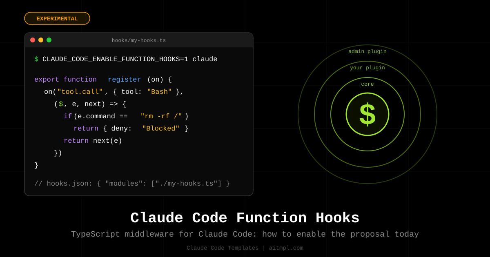

CLAUDE_CODE_ENABLE_FUNCTION_HOOKS=1 claude on Claude Code 2.1.259 or newer. The API is early access and may change between releases. Our catalog section moved from /function-hooks to /mods, the CLI flag is now --mod (--function-hook still works), and all ten mods below were rewritten and typechecked against Anthropic's published claude-code.d.ts. The rest of this article is the original explainer from September 4; where a code sample below differs from the shipped API, the catalog entry is the one to trust.
What Function Hooks Are
Today a Claude Code hook is a shell command. Claude Code sends it a JSON payload on stdin, the script exits 0 or 2, and optionally prints JSON to allow, deny, or add context. It works, but the contract is narrow: a shell hook cannot rewrite a tool's input, cannot return its own result in place of the tool, has no state between calls, and cannot draw anything on screen.
The proposal adds a fifth hook type beside command, prompt, agent and http: a function. Your hooks.json names a TypeScript module, the module exports a register function, and every hook inside it has the same signature: ($, e, next). If you have written Express or Koa middleware, you already know the shape.
| Shell hooks (today) | Function hooks (proposal) |
|---|---|
| Allow, deny, or inject text | Rewrite inputs, short-circuit, return your own result |
| Stateless | Module state per session; a persistent store can be added to $ |
| No UI | Hook ui.render to wrap or replace what the TUI and Desktop draw |
| No native model or HTTP calls | $.model, $.http, $.fs, $.process primitives — all four present in the 2.1.266 binary |
| Cannot register or override tools | Intercept any tool.call, or replace a core tool entirely |
| Order is array position, no semantics | Order is nesting: the first plugin registered wraps everything below it |
How to Enable It
The videos in the issue show the feature behind an environment variable. The variable name comes from the demo, not from any documentation, so expect it to change:
CLAUDE_CODE_ENABLE_FUNCTION_HOOKS=1 claudeWith the flag on, the demo shows a built-in /plugin-authoring skill that generates a plugin from a one-sentence description. The output lives in .claude/ as a plugin: a manifest, a hooks.json, and the .ts file with your hooks.
strings over Claude Code 2.1.266 and the flag name appears five times, alongside the engine that reads it. We then installed security/secret-redactor from the catalog and ran it end to end. It works, unmodified. Details below.
Verified against Claude Code 2.1.266
We did not take the architecture doc on faith. Two checks, both reproducible:
1. The engine is compiled in. The binary carries the event names, the error messages and the $ factory functions themselves. The surface is larger than the doc describes:
Noun on $ |
Methods found in the 2.1.266 binary |
|---|---|
$.fs | readFile, writeFile, listDir, exists, stat, ancestors |
$.http | fetch |
$.process | run (argv, cwd, env, stdin, timeoutMs) |
$.model | complete, fork, classify — with a per-plugin token budget |
$.store | get, set, delete — JSON values only, capped at 4,194,304 characters, with a lock |
$.session | messages, cwd, model, turnCount, id, repo, surface, authorize |
$.ui | render, ask, select, input, toast, notice, status, log, open, close, press, invalidate, resolve |
$.tool | call, describe, list, register, output, execution |
$.agent | list, spawn |
$.command | list, register — plus the command.run and command.describe events |
$.prompt | submit, plus the prompt.section and prompt.context events |
Beside those, the binary knows engine.create, plugin.register, turn.complete, and a classic.* namespace (classic.PreToolUse, classic.SessionStart, classic.SessionEnd, classic.Setup) — today's shell hooks, surfaced to function hooks as events. The engine.create withholding path even has its own diagnostics for a capability that was withheld but reached the host anyway, which is precisely the mechanism our admin-capability-lockdown hook assumes.
2. A catalog hook runs unmodified. We dropped security/secret-redactor's .ts into a plugin directory, changed nothing, and started Claude Code with the flag. A clean A/B: the same question with the flag off returned an unredacted .env; with the flag on, every one of the ten patterns fired. Redaction covered the Read tool as well as Bash, and a follow-up command containing a [REDACTED:…] placeholder was denied before execution, with the hook's own message. The register(on, options) and ($, e, next) signatures the doc describes are the ones the shipping binary calls.
The plugin layout
The architecture doc is precise about where things go. Hooks stay in hooks/hooks.json; one new key, modules, points at a file beside it. Your existing command hooks keep working next to the module.
my-plugin/
├── .claude-plugin/plugin.json
└── hooks/
├── hooks.json # { "modules": ["./my-hooks.ts"] }
└── my-hooks.ts # export function register(on, options) { ... }{
"modules": ["./my-hooks.ts"]
}The module may be .js, .ts, .jsx or .tsx. It exports a single register(on, options) function, where options is the plugin's userConfig. Because registration happens up front, claude plugin validate can list every event a plugin hooks before any hook runs.
Anatomy of a Hook
This is listing 1 from the architecture doc, the same "block rm -rf /" hook that the public docs use as the shell example, rewritten as a function:
export function register(on) {
on("tool.call", ($, e, next) => {
if (e.tool === "Bash" && e.command == "rm -rf /")
return { deny: "Destructive command blocked by hook" }
return next(e)
})
}Three parameters, three jobs:
$is the engine interface: everything a hook can see or do. It is an object of nouns, each an object of events:$.tool.call,$.ui.log,$.fs.read. It is the only door. The environment that runs your hook has no ambient filesystem or network, so what a plugin did is exactly the calls it made on$.eis the event: the argument the method was called with, as an immutable plain value. Ontool.callit carries the tool name and its arguments as own fields. To change it, passnexta copy.nextis the continuation. Calling it runs the next hook registered on the event and resolves to the result of the rest of the chain. You may call it once, many times, or never. It also carriesnext.event,next.origin(which plugin raised the dispatch),next.signal(an AbortSignal for the dispatch) andnext.is(type, e)for narrowing under*.
An optional matcher between the event name and the callback narrows both the calls you see and the type of e. It is a partial of e, matched structurally; an array matches when any element matches:
on("tool.call", { tool: "Bash" }, ($, e, next) => { /* e.command is typed */ })
on("tool.call", { tool: ["Edit", "Write", "MultiEdit"] }, ($, e, next) => { /* any of the three */ })
on("ui.render", { component: "ToolUse", surface: "desktop" }, ($, e, next) => { /* one component, one surface */ })Five placements, one event
Where a shell hook needs a pre-event and a post-event, a function hook decides where its logic runs relative to the real action by how it uses next:
| Placement | Shape | Typical use |
|---|---|---|
| before | doWork(); return next(e) |
Log, validate, ask the user |
| after | const r = await next(e); useResult(r); return r |
Redact output, time the call, audit |
| during | const p = next(e); doWork(); return p |
Show a spinner while the tool runs |
| instead | return { deny: "..." } or return ownResult |
Deny, serve from cache, replace a tool |
| modifying | return next({ ...e, command: rewritten }) |
Rewrite npm to pnpm, add a timeout |
Order Is Nesting
This is the part of the proposal that took the community a few replays to digest, and it is the part that matters most for security. Hooks registered on one event fold like middleware: on(X, A), on(X, B), on(X, C) becomes X = A(B(C(core))). The first plugin registered sits on the outside, sees every event first and every result last, and nothing beneath it can bypass it.
Organizations use exactly this. Managed settings list the plugins an administrator prepends (control) and appends (defaults). A prepended plugin can:
- Decide which plugins may exist at all, by hooking
plugin.register. - Decide which nouns exist on
$, by hookingengine.createand returning the table without, say,httpandprocess. A plugin below cannot call what is not there. - See everything, by hooking
*. That hook runs on every event, including every other plugin's own calls on$, so an audit log is one function.
// Listing 5 from the architecture doc: an audit log as one prepended hook.
on("*", ($, e, next) => {
$.ui.log(`${next.origin} called ${next.event} at ${Date.now()}`)
return next(e)
})$ is mechanical. As one commenter in the thread put it, this is the first plugin model where an audit log is trustworthy by construction rather than by convention.
Three Hooks That Shell Hooks Cannot Express
The three snippets below are trimmed from components in the aitmpl.com catalog (linked in the table further down). They cover the three things the shell contract cannot do: rewrite, short-circuit, and draw.
1. Rewrite the input: npm to pnpm
on("tool.call", { tool: "Bash" }, ($, e, next) => {
const rewritten = e.command
.replace(/\bnpm\s+(install|i|add)\b/g, "pnpm add")
.replace(/\bnpx\s+/g, "pnpm dlx ")
if (rewritten === e.command) return next(e)
$.ui.log(`[npm-to-pnpm] ${e.command} -> ${rewritten}`)
return next({ ...e, command: rewritten }) // events are immutable: forward a copy
})2. Short-circuit: cache WebFetch
const cache = new Map()
on("tool.call", { tool: "WebFetch" }, async ($, e, next) => {
const key = `${e.url}\n${e.prompt}`
const hit = cache.get(key)
if (hit) return hit.result // nothing below runs: no network call at all
const result = await next(e)
if (result && !result.deny) cache.set(key, { result })
return result
})3. Draw: a duration badge on every ToolUse
on("ui.render", { component: "ToolUse" }, async ($, e, next) => {
const { Box, Text } = $.ui.resolve(e) // the surface's own element table
const drawn = await next(e) // whatever the engine drew
const ms = durations.get(e.props.tool_use_id)
if (e.props.isRunning || ms === undefined) return drawn
return (
<Box flexDirection="row" gap={1}>
{drawn}
<Text color="green">{`${ms} ms`}</Text>
</Box>
)
})The same JSX renders on the terminal, on Desktop and on mobile; the shipped element table is Box, Text, Button, Input, Select, Link, Code, Client and (terminal only) Raster. A hook never receives rendered state, only props and the component to render, so the component names and props are public API in the declarations, on the same footing as a tool's input schema.
10 Mods in the Catalog
We wrote ten mods, one per pattern the design demonstrates, and rewrote them against Anthropic's published declarations once those landed. Each catalog entry is the real thing: the hooks.json with its modules key, and the TypeScript hooks-module it names, typechecked with tsc against claude-code.d.ts. Install any of them with the --mod flag (--function-hook is kept as an alias):
npx claude-code-templates@latest --mod security/block-destructive-commandsIt writes the plugin layout above to .claude/skills/<name>/. Then start Claude Code with the flag. Pointing --plugin-dir at the directory is the path we tested and the one we recommend:
CLAUDE_CODE_ENABLE_FUNCTION_HOOKS=1 claude --plugin-dir .claude/skills/block-destructive-commandsClaude Code also picks the directory up on its own as <name>@skills-dir on the next session, once you trust the workspace. Two differences worth knowing: a mod loaded from the skills directory does not hot-reload on edit (--plugin-dir does), and claude plugin validate .claude/skills/<name> prints every event the module hooks and every $ call it makes before anything runs.
.ts file runs in it without a single edit:
mkdir -p .claude/plugins/secret-redactor/{.claude-plugin,hooks}
cd .claude/plugins/secret-redactor
echo '{"name":"secret-redactor","version":"0.0.1"}' > .claude-plugin/plugin.json
echo '{"modules":["./secret-redactor.ts"]}' > hooks/hooks.json
# then drop secret-redactor.ts next to hooks.json and run:
CLAUDE_CODE_ENABLE_FUNCTION_HOOKS=1 claude --plugin-dir .claude/plugins/secret-redactor| Hook | Event(s) | Placement | What it does |
|---|---|---|---|
security/block-destructive-commands |
tool.call |
instead | Denies rm -rf /, force push, hard reset, destructive SQL, disk formatting |
security/secret-redactor |
tool.call |
after | Replaces keys, tokens, JWTs and connection strings in tool output before the model reads them |
security/protected-paths-guard |
tool.call |
instead | Denies edits to .env, lockfiles, CI workflows and private keys, with an allow list |
security/large-edit-confirmation |
tool.call |
before | Asks the user before editing a file over N lines, via the permissions primitive |
productivity/npm-to-pnpm-rewriter |
tool.call |
modifying | Rewrites npm/npx to pnpm, yarn or bun |
productivity/webfetch-cache |
tool.call |
instead / after | Serves repeated WebFetch calls from a session cache with TTL |
observability/universal-audit-log |
* |
after | JSON line per event with origin, duration and outcome, including denials |
ui/tool-timing-badge |
tool.call, ui.render |
after | Times every tool call and draws a colored badge next to the ToolUse row |
integrations/websearch-to-exa |
tool.call |
instead | Replaces the built-in WebSearch with Exa through $.http, with fallback |
enterprise/admin-capability-lockdown |
engine.create, plugin.register, tool.call |
after / instead | Withholds http and process from $, allowlists plugins, denies shell network commands |
Browse them all at aitmpl.com/mods. The listing carries the same early-access banner as this article.
secret-redactormatches by shape, not by meaning. Its ten patterns catch key- and token-shaped strings, soPASSWORD=hunter2andAPI_SECRET=correct-horse-battery-staplego through untouched. There is no entropy check and no keyword heuristic. Treat it as a net for the obvious leaks, not as a guarantee.- Its
connection-stringpattern redacts only the credentials. The expression stops at the@, sopostgres://user:pw@db.internal.example:5432/appdbbecomes[REDACTED:connection-string]db.internal.example:5432/appdb. Username and password are gone; host, port and database name still reach the model. That is often what you want in a log, but it is a deliberate half-measure and worth knowing before you rely on it.
One more practical note: $.ui.log appears to be a TUI surface. In headless runs (claude -p, even with --debug) the hooks' log lines did not show up. That does not affect universal-audit-log, which writes through $.fs.append and deliberately skips ui.* events, but it does mean a hook that reports only through $.ui.log will be silent in CI.
What the Thread Is Still Asking
The issue collected serious feedback within a day, much of it from people who run dozens of hooks in production. If you are deciding whether to invest, these are the open questions worth tracking, none of which the doc answers yet:
- Fail-open or fail-closed? If a hook three deep throws, does the action proceed or get blocked? For a redaction hook, fail-open is worse than no hook at all. Several commenters want this declared per hook.
- Hang budget. What cancels a hook whose promise never settles? Partly answered by the binary: there is reentrancy detection, and it is specific. Call
$.modelfrom aprompt.submithook and 2.1.266 tells you the call "would wait on the turn this hook is holding", then names the ways out — answer{ text }, callnext(e), or defer to a later event such asturn.complete. There are budgets too (a per-plugin model-token budget that can be spent). What is still unclear is the generic case: a plainawaiton something slow that is not the model. - How far does
$.fsreach? Many real hooks read~/.secrets/and write state outside the project. The methods exist in 2.1.266 —readFile,writeFile,listDir,exists,stat,ancestors— but what paths they will actually accept, and under whose permission settings, is not something you can read off a binary. The author's stated intent is not to restrict plugins but to route everything through$so admins can audit, allowlist and deny. - Do MCP tool calls go through
tool.call? If they reach the model outside$, the biggest gap in today's guards stays open. - Interleaving with command hooks. Nobody migrates 150 hooks in one release. Does a command hook's deny win over a function hook that called
next? - Testing. A documented fake
$and a fixture format would decide whether existing test suites port or get rewritten. - Forward compatibility. One maintainer measured that an unknown key in
hooks.jsonmakes older Claude Code versions drop the whole file silently. Amoduleskey needs to be skipped, not rejected, by builds that predate it.
Should You Care Now?
If you only need allow/deny, your shell hooks are fine and will keep working; the doc is explicit that command hooks run beside function hooks, not instead of them. Function hooks earn their complexity in three places: when you need to change what a tool receives or returns, when you need state or a UI, and when you are an administrator who needs a control that cannot be argued with. If any of those is you, the ten catalog hooks are a concrete starting point, and the issue is where your opinion changes the outcome.
$ isolated so they are easy to rename, and go tell Anthropic in #91870 whether you want this to ship.
Created by Daniel Ávila